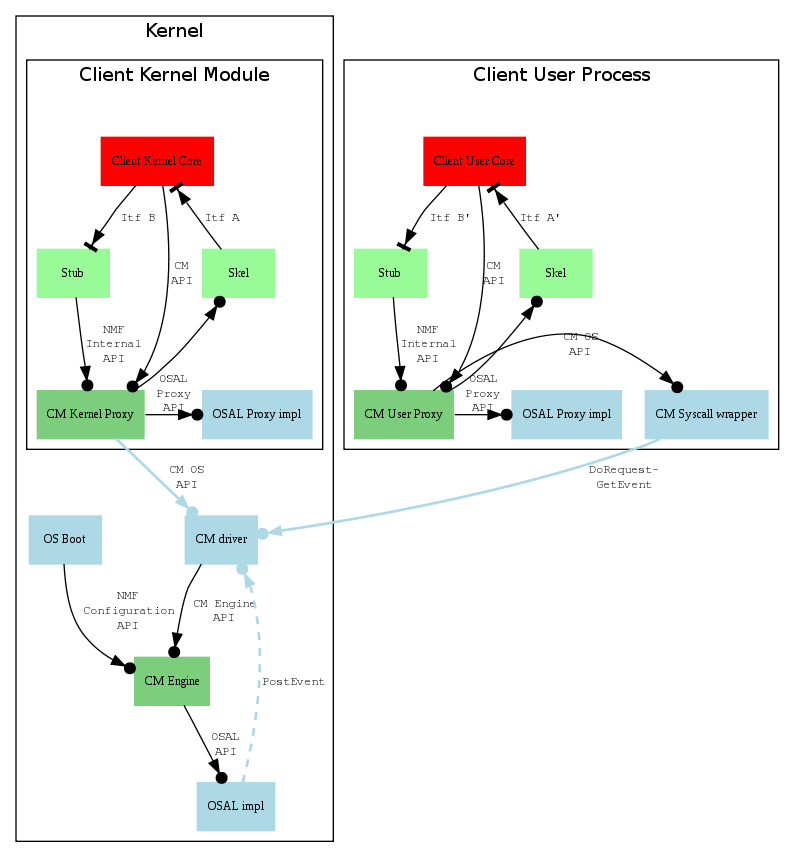

Such API are provided to Operating System integrators for integrating NMF inside an operating system. This is not public APIs.
Several class of API defined by NMF must be considered:
- Firt class of API regroup services provides by NMF components to upper layer components. Several API must be considered:
- CM Operating System API (a.ka. CM Driver API)
This API is required by CM Proxy and shall be implemented in driver user part. This CM proxy provided to client the CM API Host developers API. According to the operating system integration policies such API must be propagated through User -> Kernel boundary.
- CM Engine API
This API is provided by CM Engine and shall be required by driver kernel part.
- CM Engine Control API
This API is dedicated for low level configuration and interrupt management and is provided by CM to Operating System. This API must be called during component manager initialization and when an interrupt incoming from MPC (or HSEM) occur.
- Second class of API regroup API required by NMF components and must be provided by operating system. Several API must be considered:
- Third class of API regroup API provided to user part integrator. Several API must be considered:
- Warning:
- This page is targeted for OS integrators. This is not public APIs.
The following picture show functional architecture for NMF OS integration of user and kernel bindings. Such conventions are adopted:
- Dark green boxes show component delivered by NMF (CM Engine, CM Kernel Proxy and CM User Proxy).
- Light blue boxes show component that need to be implemented during OS integration.
- Ligth green boxes show code generated by NMF tools.
- Red boxes show Client core running either in user space or in kernel space.

MPC -> Host binding OS integration is detail in MPC -> Host binding.
Host -> MPC binding OS integration is detail in Host -> MPC binding.
Information about providing access to memory from user space is detail in User MPC Memory Management.